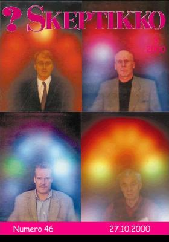

Kuten Jukka Häkkinen puheenjohtajan palstallaan kertoo, kävi neljä skeptikkoa Turun messuilla aurakuvassa (80 mk/kpl) ”hakemassa elämäänsä ja maailmaansa erilaisia ja uusia näkökulmia”.
Palvelua tarjonnut Nouseva Aurinko – henkisen uudistumisen keskus ry kertoo esitteessään, että kuvat otetaan Auraspectrophotometer 2100 -kameralla, joka on kehitetty USA:ssa The Institute for Psychic Developmentissa. Laitetta on kehitetty usean vuoden aikana yhdessä parantajien, selvänäkijöiden, tietotekniikan ja optiikan alojen asiantuntijoiden kanssa.
Lopputuloksena syntyi kamera, jolla voi kuvata ihmisen auran eli energiakentän. Herkkä elektroninen mittauslaite, jossa on 11 anturia, mittaa auravärähtelyn kädestä. Käden eri osat vastaavat eri alueita kehossa – samoin kuin jalkaa käytetään vyöhyketerapiassa ja korvaa akupunktiossa. Tietokoneohjelma työstää tuloksen ja muuntaa värähtelyt niitä vastaaviksi väreiksi.
Vastaavanlaista kameraa Skepsiksen käyttöön kehitellyt Pertti Laine kertoo, että temppu tapahtuu asentamalla Polaroid-kameran sisälle useita eri värisiä lamppuja tai pieniä ledejä eli valodiodeja. Kuva syntyy kaksoisvalotuksella. Aurakuvaa kuvattaessa filmiä valotetaan näiden lamppujen antamalla valolla, josta syntyy aura, sekä objektiivin läpi tulevalla kuvalla. Jos kuvattava henkilö ei ole kameran edessä, mutta käden tiedot on tallennettu tietokoneeseen, saadaan kuva pelkästä aurasta. Jotta auran väreihin saataisiin jonkinlaista vaihtelua, ohjataan värilamppuja yksinkertaisella elektroniikalla. Käden alustalla olevilla metallinastoilla mitataan sähkönjohtavuutta.
”Kyseessä on yksinkertainen vastusmittari, jossa mittaustulos esitetään värien vaihteluna. ’Auran’ tai muun vastaavan asian mittaamisen kanssa laitteella ei ole mitään tekemistä.”
 Skepsiksen puheenjohtajan ”kruunun” päänsä päälle kuvatuttaneen Jukka Häkkisen kokemukset aurakuvasta ja sen tulkinnasta löytyvät puheenjohtajan palstalta.
Kalervo Kankaan kuvassa esiintyvä iso punainen pallo oikealla kertoo ahdistuksesta ja siitä, että Kalervo on jonkinlainen kiukkupussi. Kankaan mieleen ei jäänyt kuvatulkinnasta paljon muuta. Tulkitsija teki työtään meditaatiotilassa, oli hyvin lyhytsanainen, kun samaan aikaan vieressä käytiin läpi vuolaita tulkintoja aina lapsuuden tapahtumista saakka. Kankaan kuvan tulkitsija sanoi yrittävänsä toimia niin, ettei tulkittavan energiakenttä häiritse hänen omaa kenttäänsä. Ilmeisesti Kankaan julma ulkonäkö häiritsi työtä.
Kangas ihmetteli myös sitä, kuinka kuvan värit voivat merkitä kahta aivan eri tulkitsijan arvioimaa asiaa.
Heikki Ervasti kuvailee tulkintaansa tasapaksuksi mössöksi. Kuva kertoi, että hänellä on luovuutta, vastaanottavaisuutta ja kommunikointivaikeuksia.
”Jokainen ihminen on jollakin tavalla luova. Jokainen, joka menee aurakuvaan, on jollakin tavalla vastaanottavainen. Jokaisella on elämässään jossakin vaiheessa kommunikointivaikeuksia.”
”Se, mitä kuvasta ei tulkitsija löytänyt, on stressi, vaikka en ollut edellisenä yönä nukkunut tuskin lainkaan ja vaikka olin pitänyt samana päivänä kuusi tuntia luentoa. Ehkä aurani oli tuulettunut ulos auton ikkunasta, jota pidin auki, kun messukeskukselle ajoin.”
”Kyseisellä laitteella ei tee yhtään mitään, paitsi rahaa.”
Veikko Näntö kertoo, että kuvan tulkitsija osoitti hänen symmetrisen, miehisen ja feminiinisen energian olevan tasapainossa. Pään yläpuolella oleva oranssi väri on parantava ja huolehtiva väri, joka merkitsee joko kykyä parantaa tai itsellä käynnissä olevaa paranemisprosessia tai muuttumista, jonka suunnasta ei ole tietoa. Korvien kohdalla esiintyy henkistä voimaa osoittavaa väriä. Kuvassa on myös valkoista väriä, joka kertoo ulossuuntautuvasta voimasta.
Hartioitten alapuolella oleva fyysisen alueen väritön alue viittaa tulkitsijan mukaan sairauteen. Ja kas: Veikko Näntö oli puolitoista vuotta sitten sydämen ohitusleikkauksessa!
”Tulkinta oli kaikin puolin positiivinen; voin sen mukaan hyvin. Ja tulkinta sen kuin matkan varrella paranee, kun sitä muistelee yhä itselleen sopivampana.”
Jotta lukijat voisivat tehdä omat tulkintansa skeptikoidemme tilasta, julkaisemme seuraavassa Nousevan Auringon esitteen mukaisen aurakuvien värien merkityksen.
Värien sijainnin merkitys
Kirjoittaja Risto K. Järvinen on Skeptikko-lehden päätoimittaja.